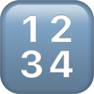

SocratiQ AI
AI Learning Companion
Welcome to SocratiQ (pronounced ``Socratic’’), an AI learning assistant seamlessly integrated throughout this resource. Inspired by the Socratic method of teaching—emphasizing thoughtful questions and answers to stimulate critical thinking—SocratiQ is part of our experiment with what we call as Generative Learning. By combining interactive quizzes, personalized assistance, and real-time feedback, SocratiQ is meant to reinforce your understanding and help you create new connections. SocratiQ is still a work in progress, and we welcome your feedback.
Listen to this AI-generated podcast about SocratiQ.You can enable SocratiQ by clicking the button below:
You can directly control SocratiQ by adding ?socratiq= parameters to your URL:
- To activate: mlsysbook.ai/?socratiq=true
- To deactivate: mlsysbook.ai/?socratiq=false
This gives you with quick access to toggle SocratiQ’s functionality directly from your browser’s address bar if you are on a page and do not want to return here to toggle functionality.
SocratiQ’s goal is to adapt to your needs while generating targeted questions and engaging in meaningful dialogue about the material. Unlike traditional textbook study, SocratiQ offers an interactive, personalized learning experience that can help you better understand and retain complex concepts. It is only available as an online feature.
Quick Start Guide
- Enable SocratiQ using the button below or URL parameters
- Use keyboard shortcut (
Cmd/Ctrl + /) to open SocratiQ anytime - Set your academic level in Settings
- Start learning! Look for quiz buttons at the end of sections
Please note that this is an experimental feature. We are experimenting with the idea of creating a dynamic and personalized learning experience by harnessing the power of generative AI. We hope that this approach will transform how you interact with and absorb the complex concepts.
About AI Responses: While SocratiQ uses advanced AI to generate quizzes and provide assistance, like all AI systems, it may occasionally provide imperfect or incomplete answers. However, we’ve designed and tested it to ensure it’s effective for supporting your learning journey. If you’re unsure about any response, refer to the textbook content or consult your instructor.
Once you’ve enabled SocratiQ it will always be available when you visit this site.
You can access SocratiQ at any time using a keyboard shortcut shown in Figure 1, which brings up the interface shown in Figure 2.


Button Overview
The top nav bar provices quick access to the following features:
- Adjust your settings at any time.
- Track your progress by viewing the dashboard.
- Start new or save your conversations with SocratiQ.

Personalize Your Learning
Before diving into your studies, take a moment to configure SocratiQ for your academic level. This initial setup ensures that all interactions, from quiz questions to explanations, are tailored to your background knowledge. Figure 4 shows where you can adjust these preferences.
You can augment any AI SocratiQ response using the dropdown menu at the top of each message.

Learning with SocratiQ
Quizzes
As you progress through each section of the textbook, you have the option to ask SocratiQ to automatically generate quizzes tailored to reinforce key concepts. These quizzes are conveniently inserted at the end of every major subsection (e.g., 1.1, 1.2, 1.3, and so on), as illustrated in Figure 6.

{kind=link}
Each quiz typically consists of 3-5 multiple-choice questions and takes only 1-2 minutes to complete. These questions are designed to assess your understanding of the material covered in the preceding section, as shown in Figure 7 (a).
Upon submitting your answers, SocratiQ provides immediate feedback along with detailed explanations for each question, as demonstrated in Figure 7 (b).


Example Learning Flow
- Read a section
- Select challenging text → Ask SocratiQ for explanation
- Take the section quiz
- Review related content suggestions
- Track progress in dashboard
Getting Help with Concepts
When you encounter challenging concepts, SocratiQ offers two powerful ways to get help. First, you can select any text from the textbook and ask for a detailed explanation, as demonstrated in Figure 8.

Once you’ve selected the text, you can ask questions about it, and SocratiQ will provide detailed explanations based on that context, as illustrated in Figure 9.

Figure 11 shows the response for the ask in Figure 9.
Additionally, you can also reference Sections, as shown in Figure 10, Sub-sections and keywords directly as you converse with SocratiQ. Use the @ symbol to reference a section, sub-section or keyword. You can also click the + Context button right above the input.

{kind=link}
To enhance your learning experience, SocratiQ doesn’t just answer your questions—it also suggests related content from the textbook that might be helpful for deeper understanding, as shown in Figure 12.
{kind=link}
Tracking Your Progress
Performance Dashboard
SocratiQ maintains a comprehensive record of your learning journey. The progress dashboard (Figure 13) displays your quiz performance statistics, learning streaks, and achievement badges. This dashboard updates real-time.

As you continue to engage with the material and complete quizzes, you’ll earn various badges that recognize your progress, as shown in Figure 14.
Achievement Badges
As you progress through the quizzes, you’ll earn special badges to mark your achievements! Here’s what you can earn:
| Badge | Name | How to Earn |
|---|---|---|
| First Steps | Complete your first quiz | |
|  | On a Streak | Maintain a streak of perfect scores |
| Quiz Medalist | Complete 10 quizzes | |
| Quiz Champion | Complete 20 quizzes | |
| Quiz Legend | Complete 30 quizzes | |
| Quiz AGI Super Human | Complete 40 or more quizzes |
Keep taking quizzes to collect all badges and improve your learning journey! Your current badges will appear in the quiz statistics dashboard.
{kind=link}
If you’d like a record of your progress you can generate a PDF report. It will show your progress, average performance and all the questions you’ve attempted. The PDF is a generated with a unique hash and can be uniquely validated.
{kind=link}
Data Storage
Important Note: All progress data is stored locally in your browser. Clearing your browser history or cache will erase your entire learning history, including quiz scores, streaks, and achievement badges.
You can also delete all of your saved conversations by clicking the New Chat button in the nav bar.

Technical Requirements
To use SocratiQ effectively, you’ll need:
- Chrome or Safari browser
- JavaScript enabled
- Stable internet connection
Common Issues and Troubleshooting
- If SocratiQ isn’t responding: Refresh the page
- If quizzes don’t load: Check your internet connection
- If progress isn’t saving: Ensure cookies are enabled
For persistent issues, please contact us at vj[@]eecs.harvard.edu.
Providing Feedback
Your feedback helps us improve SocratiQ.
You can report technical issues, suggest improvements to quiz questions, or share thoughts about AI responses using the feedback buttons located throughout the interface. You can submit a GitHub issue.
If you prefer leaving feedback via Google Form, you are welcome to do so via this link:
Share Your Feedback